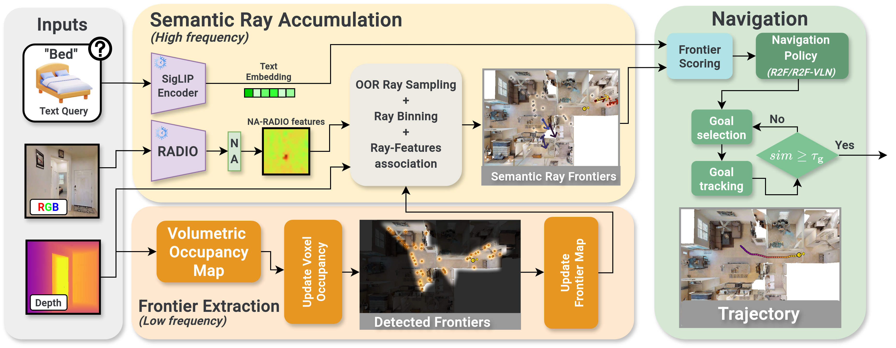

R2F: Repurposing Ray Frontiers for LLM-free Object Navigation
Abstract
R2F introduces a novel approach to LLM-free object navigation by repurposing ray frontiers. This method provides efficient and effective navigation strategies for autonomous agents in complex environments.
Graphical Abstract

Architecture

R2F repurposes ray frontiers for efficient object navigation without relying on large language models. The architecture leverages geometric understanding of the environment to enable robust navigation strategies.